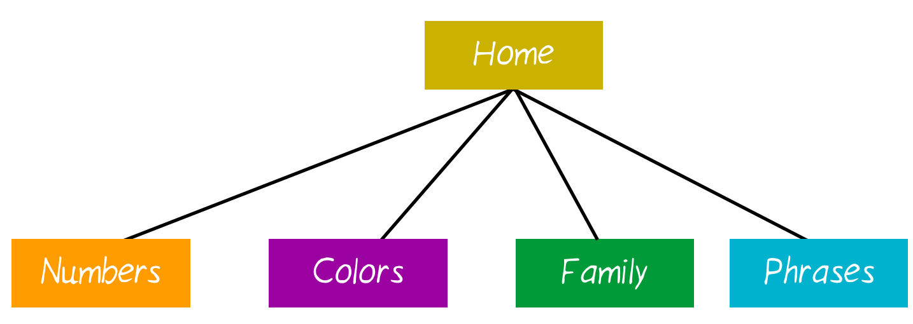
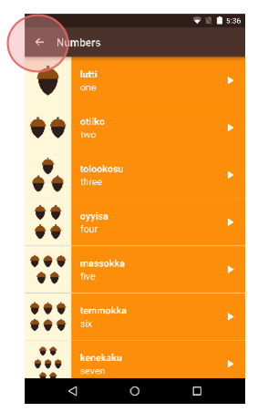
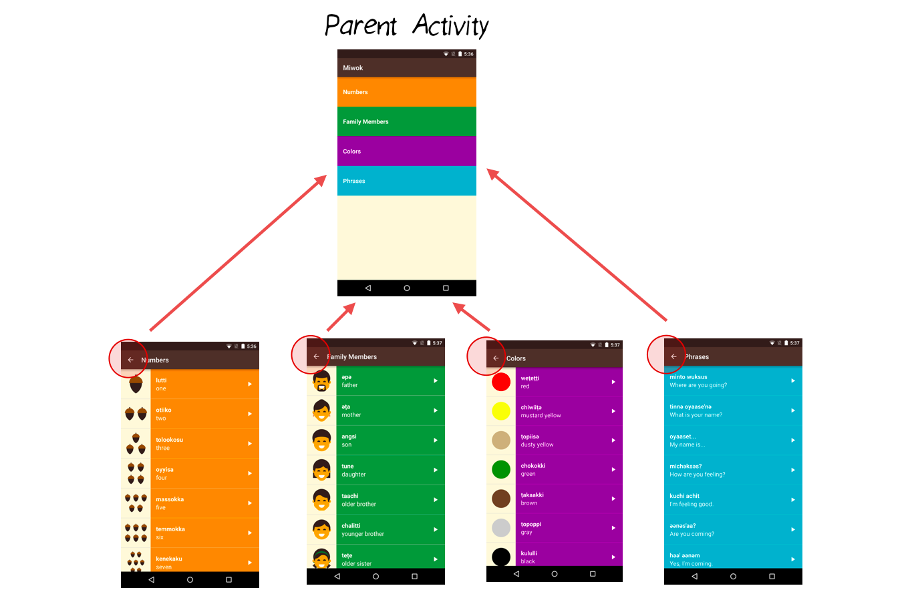
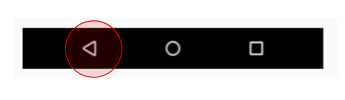
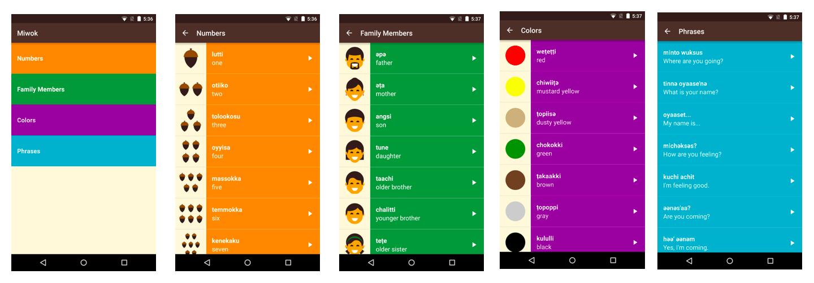

04. Up Button
Up Button
Question:
You can create a diagram of the relationships between the screens of an app.
The following diagram shows an example of the relationship between screens in the Miwok app. The home screen (with the four category buttons) is the “parent” activity. It leads to the list of vocab words, which are the “children” activities. This type of parent-child relationship is important because sometimes the user may want to navigate to parent or child activities. It’s another way of navigating around the app, and can come in useful if the user lands somewhere within the app that’s not the home screen. See more details in the training documentation.

When viewing Android apps, you may have noticed a horizontal arrow pointing left in the app bar. This is called the “Up” button. In the upcoming coding task, you will be adding the “Up” button to NumbersActivity, FamilyActivity, ColorsActivity, and PhrasesActivity.

This button allows the user to navigate to the parent activity, which we will call MainActivity.

“Up” Button vs. “Back” Button
Now you might be wondering, doesn’t the “Up” button just do the same thing as the “Back” button?
Well, not exactly. The “Back” button is part of the system navigation bar on Android (leftmost triangle icon). No matter which app you’re in, when you tap the “Back” button, you’ll go back to where you previously came from.

However, there are certain cases where “Back” and “Up” result in different behavior. The “Up” button ALWAYS leads you to the parent activity. The “Back” button can lead you to the parent activity, or the home screen, or to another app, depending on how you arrived at the current screen.
Here’s an example scenario. Say you are browsing the web in an app. You receive notification of a new email. You click the notification, and suddenly you’re in the email app. Once you’re done reading the email, if you tap the “Back” button, you’ll go back to the web app. If you tap the “Up” button, you’ll go to the parent activity, which is the list of all emails.
The distinction between “Up” and “Back” really starts to matter if the user can get directly to a screen in your app without going through the main page (i.e. directly opening a single email without going through the list of all emails). In the Miwok app, the user has to go through the main screen, so “Up” and “Back” have the same effect. However, the ideal thing would be to provide the user with another way to navigate to the MainActivity.
For best practices, we will practice implementing the “Up” button. For information on how to do this, check out this tutorial.
This is what the app looks like before the coding task:

This is what the app looks like after the coding task (look closely at the app bar):

Start Quiz:
Solution:
This is what a single category activity in the AndroidManifest.xml should look like when you’re done:
<activity
android:name=".NumbersActivity"
android:label="@string/category_numbers"
android:parentActivityName=".MainActivity">
<!-- Parent activity meta-data to support 4.0 and lower -->
<meta-data
android:name="android.support.PARENT_ACTIVITY"
android:value=".MainActivity"/>
</activity>See the full AndroidManifest.xml file.
INSTRUCTOR NOTE:
Add Up Button to your Activity
Additional Resources on Navigation:
- http://developer.android.com/training/design-navigation/ancestral-temporal.html
- http://developer.android.com/design/patterns/navigation.html
These are the changes needed to complete the quiz.
This is the state of the code after completing the quiz.